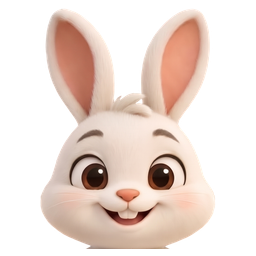

09:41
Sesle anlat
Bugün
Bugün ne çözdün?
80 matematik
TYT Türkçe 33D 4Y
Başlangıç
09:41
Sesle anlat
BugünBugün ne çözdün?
Bugün TYT denemesi çözdüm Türkçe 33 doğru 4 yanlış bir de 80 matematik çözdüm
Konuşuyor